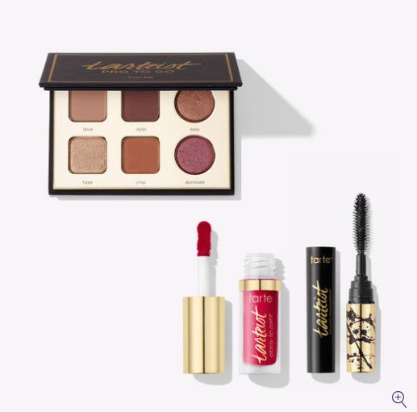
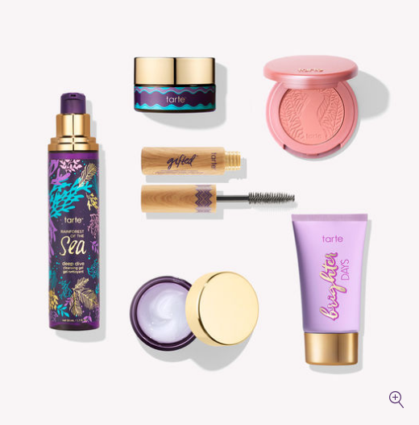
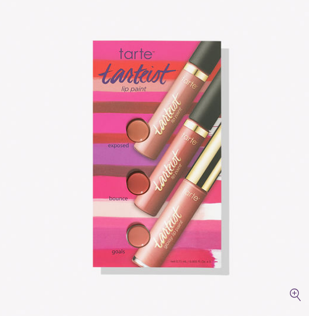

최근 아침 화장(?) 루틴은
미샤 에센스 → 세럼 → 수분크림 → RMK 메이크업 베이스 또는 베카 프라이머 → 시세이도 쿠션 또는 림멜 CC 크림
→ 가끔 버버리 얼씨 쉐이딩 → 루나솔 또는 베카 하이라이터 → 베카 핑쿠 또는 맥 풀오브조이 블러셔 → 겔랑 파우더로 전체 쓸어주기 → 립스틱 끗! 입니다
(화장 안한다고 생각했는데 적고보니 겁나 많네용;;;)
시세이도 쿠션 훌륭하네요
쿠션 자체를 별로 좋아하지 않아서 예전에 맥 쿠션 써보고 두번째 인데
제 취향은 시세이도 쪽입니다 :)
얇게 잘 발리고 뭉치거나 뜨는것도 없구요 :)
눈썹도 안그리고 섀도우도 안바르지만 색조는 가끔 사고싶은거 아니겠습니까
오랜만에 Tarte 들어갔다가 충동구매 했습니다 :3
섀도우 질감이나 색이 정말 제 취향입니다 :D

limited-edition tarteist ™ treats color collection
Travel set includes:
- tarteist ™ PRO to go Amazonian clay palette - drive (nude), stylin (brown), boss (bronze), hype (gold), crisp (chestnut), dominate (shimmering raspberry)
- deluxe tarteist ™ lash paint mascara
- deluxe tarteist ™ glossy lip paint - wcw (berry)

limited-edition tarte starters skin & color set
Travel set includes:
- deep dive cleansing gel
- drink of h2o hydrating boost moisturizer
- brighter days highlighting moisturizer
- C-brighter™ eye treatment
- gifted™ Amazonian clay smart mascara
- Amazonian clay 12-hour blush in monarch (apricot nude)

$1 샘플이라길래 구매한
tarteist™ lip paint blister card
예전에는 사람 많아서 싫다 하면서도;; 센트럴 잘도 돌아다녔는데
이제는 기가 너무 순식간에 빨려서 -_-;;; 윈도우쇼핑하러 나가기도 겁나네요
점점 누워서 할수있는 아이템만 사 모으고 있습니다;;;
이불밖은 위험해.....